The model is fully probabilistic and autoregressive, with the predictive distribution for each audio sample conditioned on all previous ones.
对于一段波形
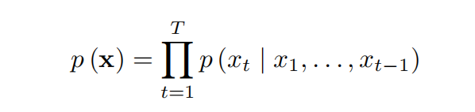
也即第t个时间步（time step）的样本点（sample）会依赖于之前所有的时间步的样本点。
条件概率分布是通过一层层的卷积层建模的。网络中没有pooling层且输入和输出维度相同。模型的输出是下一个时间步的分类分布（透过softmax得到）。
WaveNet中最主要的成分就是因果卷积（causal convolution）。使用因果卷积可以让当前时间步的output只依赖于之前时间步的input。下图中，因果卷积的filter length为2，stride为1。如果要增加感受野，需要增大filter length或者叠很多层卷积，这样会大大增加计算量。
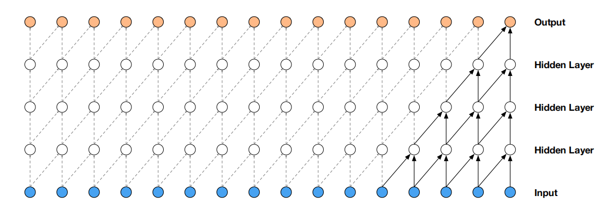
为解决该问题，WaveNet中使用了膨胀因果卷积（dilated causal convolution），即卷积会跳过一些sample，产生空洞。当dilation等于1时就是普通的因果卷积。可以看到，同样是叠了5层卷积，上图中一个output的感受野为5；而下图中却为16。这种设计可以有效扩大感受野，但又不会增加太多计算量。
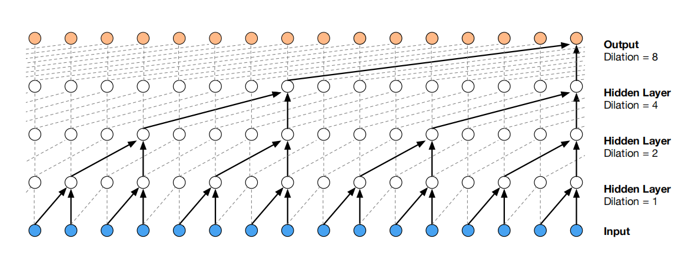
在WaveNet中，每叠一层卷积，dilation就乘以2。当dilation数值达到一定程度后又从1开始。例如：
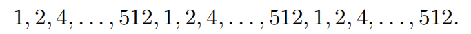
这样可以使感受野随着深度的增加而指数倍增加。
通常，一段音频会被保存为16 bit的序列，即每个时间步用16 bit表示。16 bit对应65536个数值，也就意味这softmax要预测65536个类别的概率。为了减少计算量，WaveNet中首先会使用
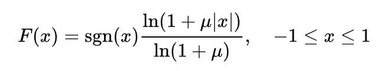
反
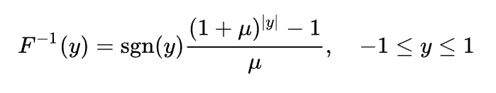
Tensorflow实现：
xdef mu_law_encode(audio, quantization_channels): '''Quantizes waveform amplitudes.''' with tf.name_scope('encode'): mu = tf.to_float(quantization_channels - 1) # audio应当介于[-1.0, 1.0]。但防止重采样时可能带来的异常大的值（超过1.0）， # 此处会先使用minimun操作保证audio介于[-1.0, 1.0] safe_audio_abs = tf.minimum(tf.abs(audio), 1.0) magnitude = tf.log1p(mu * safe_audio_abs) / tf.log1p(mu) signal = tf.sign(audio) * magnitude # 量化到256个整数值 return tf.to_int32((signal + 1) / 2 * mu + 0.5)
def mu_law_decode(output, quantization_channels): '''Recovers waveform from quantized values.''' with tf.name_scope('decode'): mu = quantization_channels - 1 # 将用整数表示的信号映射回[-1.0, 1.0] signal = 2 * (tf.to_float(output) / mu) - 1 # 反mu-law magnitude = (1 / mu) * ((1 + mu)**abs(signal) - 1) return tf.sign(signal) * magnitude
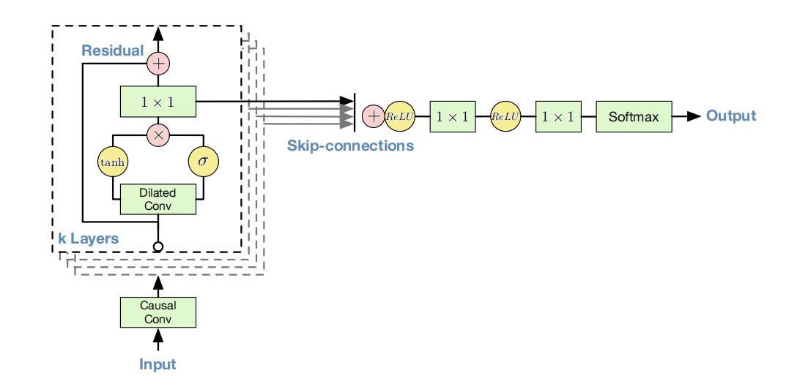
门控激活单元式子：
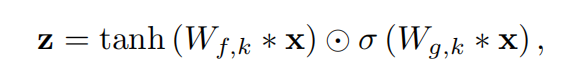
其中，
残差连接的作用：
给予额外的输入
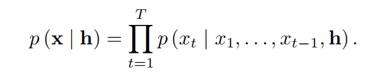
Global conditioning
Global conditioning是一种latent representation，会在所有时间步都起作用，例如speaker embedding。此时门控激活单元的式子变为：
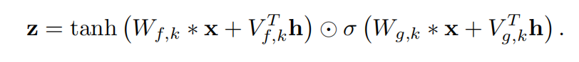
Local conditioning
Local conditioning是另一串时间序列
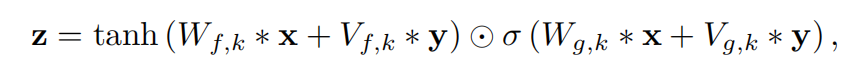
[1609.03499] WaveNet: A Generative Model for Raw Audio (arxiv.org)
ibab/tensorflow-wavenet: A TensorFlow implementation of DeepMind's WaveNet paper (github.com)
WaveNet，一种端到端的语音合成模型 - 知乎 (zhihu.com)